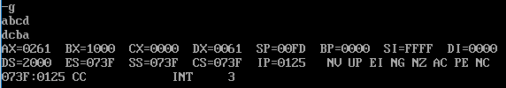

/*
Zhongyuan Zheng / zhongyuan_zheng@my.cuesta.edu
CIS 240
Exercise 2.4 Part 1
*/
mov ax, 2000
mov ds, ax
mov si, 1000
mov ah, 1
int 21
cmp al, 0d
je 115
mov [si], al
inc si
jmp 108
mov bx, 1000
sub si, 1001
mov ah, 02
mov dl, [bx+si]
int 21
dec si
jns 11c
int 3
